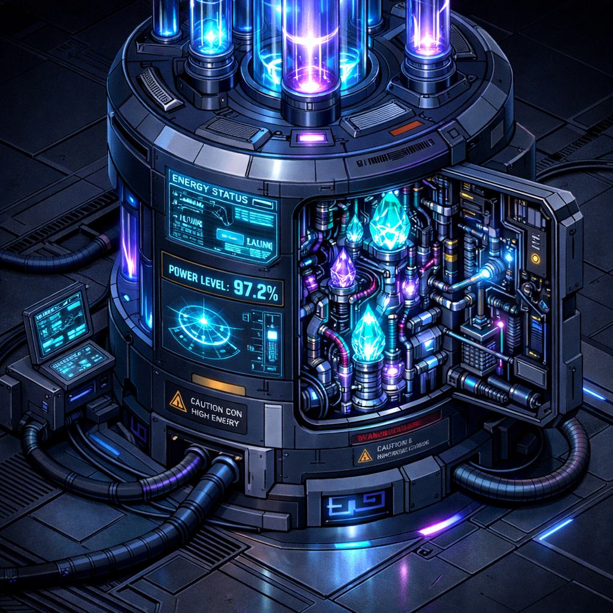

Advanced Topics¶

Advanced techniques and workflows for power users of site-nine.
Working with Multiple Personas¶
The most powerful way to use site-nine is running multiple OpenCode terminals simultaneously, each with a different persona working on related tasks.
Multi-Terminal Workflow¶
Terminal 1 - Administrator Persona:
You (in Terminal 1):
We need to implement user authentication for the app. Create tasks to break this down into manageable work.
Mephistopheles (Administrator):
I'll break down the authentication feature into tasks across different roles.
✓ Created task ARC-H-0001 Title: Design authentication architecture and security approach Priority: HIGH Role: Architect Description: Create ADR for auth strategy, choose JWT vs sessions, define security requirements
✓ Created task ENG-H-0002 Title: Implement authentication API endpoints Priority: HIGH Role: Engineer Dependencies: ARC-H-0001 Description: Build login, logout, refresh, and password reset endpoints
✓ Created task TST-H-0003 Title: Write authentication test suite Priority: HIGH Role: Tester Dependencies: ENG-H-0002 Description: Unit and integration tests for all auth flows including edge cases
✓ Created task DOC-M-0004 Title: Document authentication API Priority: MEDIUM Role: Documentarian Dependencies: ENG-H-0002 Description: API documentation with examples for all auth endpoints
The tasks are ready. I recommend starting with the Architect designing the approach, then handing off to the Engineer.
Terminal 2 - Architect Persona:
You (in Terminal 2):
Claim and work on task ARC-H-0001
Kothar (Architect):
I'll claim ARC-H-0001 and design the authentication architecture.
✓ Claimed task ARC-H-0001
Let me create an Architecture Decision Record...
✓ Created
.opencode/planning/ARC-H-0001.md✓ Createddocs/adr/0003-authentication-strategy.mdArchitecture Decision: - Using JWT tokens for stateless authentication - Access tokens (15 min expiry) + Refresh tokens (7 day expiry) - bcrypt for password hashing - Token stored in httpOnly cookies for security
Security Requirements: - Rate limiting on login endpoint (5 attempts per 15 min) - HTTPS required in production - Password requirements: 12+ chars, mixed case, numbers
The architecture is documented and ready for implementation. Task ARC-H-0001 is complete.
You (in Terminal 2):
Hand this off to a Engineer persona to implement
Kothar (Architect):
I'll update the handoff for task ENG-H-0002.
✓ Updated task ENG-H-0002 status to READY ✓ Added handoff notes:
Implementation ready - see ADR 0003 for architecture decisions. Key implementation points: - Use `fastapi-users` library as foundation - JWT config in src/config/security.py - Auth routes in src/api/auth.py - User model needs password_hash field (bcrypt) - Add rate limiting middleware All design decisions documented in docs/adr/0003-authentication-strategy.mdTask ENG-H-0002 is ready for a Engineer to claim.
Terminal 3 - Engineer Persona:
You (in Terminal 3):
Claim task ENG-H-0002 and implement it based on Kothar's architecture
Azazel (Engineer):
I'll claim ENG-H-0002 and implement the authentication system.
✓ Claimed task ENG-H-0002
Let me review Kothar's ADR first...
I see the architecture - JWT tokens, bcrypt hashing, rate limiting. I'll implement this now.
✓ Created
src/config/security.pywith JWT configuration ✓ Createdsrc/api/auth.pywith endpoints: - POST /auth/login - POST /auth/logout
- POST /auth/refresh - POST /auth/reset-password ✓ Updatedsrc/models/user.pywith password_hash field ✓ Added rate limiting middleware insrc/middleware/rate_limit.py✓ Implemented bcrypt password hashingImplementation complete following the ADR specs. Running quick smoke test...
✓ Auth endpoints responding correctly
Task ENG-H-0002 is ready for review. I'll update the status to REVIEW so a Tester can claim TST-H-0003.
Terminal 4 - Tester Persona:
You (in Terminal 4):
Claim task TST-H-0003 and test Azazel's authentication implementation
Eris (Tester):
I'll claim TST-H-0003 and write comprehensive tests.
✓ Claimed task TST-H-0003
Let me examine Azazel's implementation and create tests...
✓ Created
tests/test_auth.pywith test cases: - test_login_success - test_login_invalid_credentials - test_login_rate_limiting - test_token_refresh - test_expired_token - test_password_reset_flowRunning test suite...
===== test session starts ===== tests/test_auth.py::test_login_success ✓ tests/test_auth.py::test_login_invalid_credentials ✓ tests/test_auth.py::test_login_rate_limiting ✓ tests/test_auth.py::test_token_refresh ✓ tests/test_auth.py::test_expired_token ✓ tests/test_auth.py::test_password_reset_flow ✓ ===== 6 passed in 1.8s =====✅ All tests passing! The authentication implementation is working correctly.
✓ Marked task TST-H-0003 as COMPLETE ✓ Marked task ENG-H-0002 as COMPLETE
The authentication feature is tested and validated.
Benefits of Multi-Terminal Workflow¶
- Parallel Work - Multiple personas can work on different parts of the system simultaneously
- Specialization - Each persona focuses on their area of expertise
- Real-time Coordination - Personas can reference each other's work
- Natural Collaboration - Mimics how human teams work together
Coordination Patterns¶
Pattern 1: Engineer → Tester Pipeline
Have a Engineer implement features in one terminal while a Tester writes tests in another terminal, creating a continuous feedback loop.
Pattern 2: Architect → Engineer Handoff
Use an Architect to design the system in one terminal, then hand off the specifications to a Engineer in another terminal for implementation.
Pattern 3: Engineer → Inspector Review
After a Engineer completes work, bring in an Inspector in a separate terminal to review the code and suggest improvements.
Pattern 4: Administrator Orchestration
Keep an Administrator persona running in a dedicated terminal to coordinate tasks, check status, and manage the overall workflow.
Asking Personas for Project Insights¶
Instead of querying databases or running commands, ask your personas for insights conversationally.
Task Analytics¶
You:
What's our task completion rate?
Persona (Administrator):
Let me check the task analytics...
Task Status Breakdown: - COMPLETE: 24 tasks (48%) - UNDERWAY: 8 tasks (16%) - TODO: 12 tasks (24%) - REVIEW: 4 tasks (8%) - BLOCKED: 2 tasks (4%)
We're making good progress! Nearly half of all tasks are complete, and only 2 are blocked.
Persona Activity¶
You:
Which personas have been most active on this project?
Persona (Administrator):
Here's the persona activity summary:
Persona Name Missions Completed Azazel 12 10 Eris 8 7 Kothar 6 6 Nabu 4 3 Azazel (Engineer) has been the most active, with a strong completion rate.
Task Dependencies¶
You:
Show me which tasks are blocking other work
Persona (Administrator):
Let me check the task dependencies...
Blocked Tasks:
- ENG-H-0015 (Rate limiting implementation)
- Blocked by: ARC-H-0014 (Rate limiting design)
Status: ARC-H-0014 is UNDERWAY, should be ready soon
DOC-H-0018 (API documentation update)
- Blocked by: ENG-H-0015, ENG-H-0016, ENG-H-0017
- Status: Waiting on 3 Engineer tasks
The main bottleneck is architectural work. Once ARC-H-0014 completes, several tasks can proceed.
Custom Templates¶
Override default persona behavior by customizing templates.
Customizing Persona Instructions¶
-
Copy a persona template:
-
Edit the template to add project-specific guidelines:
# Engineer Persona ## Project-Specific Guidelines - Always use TypeScript strict mode - Follow the established error handling patterns in `src/errors/` - Run `npm run lint` before marking tasks complete - Update API documentation in `docs/api/` when adding endpoints ## Standard Guidelines [... rest of template ...] -
Ask personas to reference the custom template:
Use the guidelines in engineer-custom.md for this implementation
Project-Specific Workflows¶
Create custom workflow documents in .opencode/procedures/:
# Authentication Implementation Workflow
1. **Design Phase (Architect)**
- Create ADR for authentication approach
- Document security requirements
- Plan token management strategy
2. **Implementation Phase (Engineer)**
- Implement auth endpoints in `src/api/auth.py`
- Add middleware to `src/middleware/auth.py`
- Update user model with password hashing
3. **Testing Phase (Tester)**
- Write unit tests for auth functions
- Add integration tests for auth flow
- Test edge cases (expired tokens, invalid creds)
4. **Documentation Phase (Documentarian)**
- Document API endpoints
- Add usage examples
- Update README with auth setup
5. **Review Phase (Inspector)**
- Security audit of auth implementation
- Check for common vulnerabilities
- Verify password hashing strength
Then reference it in conversations:
Follow the Authentication Implementation Workflow in procedures/
Task Management Patterns¶
Ask Personas to Create Tasks¶
Instead of using CLI commands, ask personas to create tasks conversationally:
You:
Create a high-priority task for implementing rate limiting on the API
Persona (Administrator):
I'll create that task for you.
✓ Created task ENG-H-0015 Title: Implement rate limiting on API Priority: HIGH Role: Engineer Status: TODO
The task is ready for a Engineer to claim.
Ask Personas About Dependencies¶
You:
What tasks need to be completed before we can deploy to production?
Persona (Administrator):
Let me check the task dependencies...
Before deploying to production, these tasks must be complete:
Blocking Tasks: 1. TST-H-0012 - Complete integration test suite (IN PROGRESS) 2. DOC-H-0008 - Write deployment guide (TODO) 3. INS-H-0005 - Security audit (TODO)
Recommended: - OPR-M-0003 - Set up monitoring (TODO) - DOC-M-0011 - Update API documentation (TODO)
I recommend completing the blocking tasks first, then reviewing the recommended tasks.
Break Down Large Features¶
You:
We need to add a notification system to the app. This seems like a big feature - can you break it down?
Persona (Administrator):
I'll break the notification system into manageable tasks.
✓ Created task ARC-H-0020 Title: Design notification system architecture Priority: HIGH Role: Architect Description: Choose notification delivery method (websockets, SSE, polling), design data model
✓ Created task ENG-H-0021 Title: Implement notification backend Priority: HIGH Role: Engineer Dependencies: ARC-H-0020 Description: Build notification service, API endpoints, and data storage
✓ Created task ENG-H-0022 Title: Add notification frontend components Priority: HIGH Role: Engineer Dependencies: ENG-H-0021 Description: Create notification UI, toast/banner components, and real-time updates
✓ Created task TST-M-0023 Title: Test notification delivery Priority: MEDIUM Role: Tester Dependencies: ENG-H-0021, ENG-H-0022 Description: Test notification triggers, delivery, UI display, and edge cases
✓ Created task DOC-M-0024 Title: Document notification system Priority: MEDIUM Role: Documentarian Dependencies: ENG-H-0021 Description: API docs, user guide for managing notifications
I've created 5 tasks with proper dependencies. Start with the Architect designing the system.
Group Related Tasks with Epics¶
For large features spanning multiple tasks, use epics to track overall progress:
You:
Create an epic for the notification system work
Persona (Administrator):
I'll create an epic to group these notification tasks.
✓ Created epic EPC-H-0005 Title: Notification System Implementation Priority: HIGH Status: TODO
Now I'll link the related tasks to this epic...
✓ Linked task ARC-H-0020 to epic EPC-H-0005 ✓ Linked task ENG-H-0021 to epic EPC-H-0005 ✓ Linked task ENG-H-0022 to epic EPC-H-0005 ✓ Linked task TST-M-0023 to epic EPC-H-0005 ✓ Linked task DOC-M-0024 to epic EPC-H-0005
The epic is ready! You can track overall progress with
s9 dashboard --epic EPC-H-0005
Later, checking progress:
You:
What's the status of the notification system epic?
Persona (Administrator):
Let me check epic EPC-H-0005...
Epic: Notification System Implementation Status: 🚧 UNDERWAY Progress: 2/5 tasks complete (40%)
✅ Complete: - ARC-H-0020 - Design architecture (Kothar) - ENG-H-0021 - Backend implementation (Azazel)
🔄 In Progress: - ENG-H-0022 - Frontend components (Azazel)
📋 TODO: - TST-M-0023 - Test notification delivery - DOC-M-0024 - Document system
We're making good progress! The architecture and backend are done, and the frontend is underway.
Benefits of using epics:
- Visibility - See overall feature progress at a glance
- Organization - Group related tasks logically
- Auto-status - Epic status updates automatically as tasks progress
- Coordination - Easier to coordinate work across multiple personas
- Tracking - Track feature completion from start to finish
See the Epics guide for detailed information on working with epics.
Check Task Status¶
You:
What's the status of the authentication feature we've been working on?
Persona (Administrator):
Let me check the authentication tasks...
Authentication Feature Status:
✅ Complete: - ARC-H-0001 - Design auth architecture (Kothar) - ENG-H-0002 - Implement auth API (Azazel) - TST-H-0003 - Test auth endpoints (Eris)
🔄 In Progress: - DOC-M-0004 - Document auth API (Nabu, 60% complete)
Summary: Core functionality is complete and tested. Documentation is in progress and should be done today.
Request Task Reassignment¶
You:
Azazel has been working on ENG-H-0015 for 3 days and seems stuck. Can we reassign it?
Persona (Administrator):
Let me check the task status and reassign if needed...
Looking at ENG-H-0015 (Rate limiting implementation): - Claimed by Azazel 3 days ago - Status: UNDERWAY - Last update: "Researching best approach for distributed rate limiting"
This does seem to be taking longer than expected. I'll update the task:
✓ Added note: "Consider breaking into smaller tasks - redis setup + rate limit logic" ✓ Status changed to TODO ✓ Unassigned from Azazel
The task is now available for another Engineer to claim, or Azazel can reclaim it with a fresh approach.
Find Related Tasks¶
You:
What other tasks are related to payment processing?
Persona (Administrator):
Searching for payment-related tasks...
Payment Processing Tasks:
🔄 Active: - ENG-H-0030 - Integrate Stripe payment gateway (Azazel, UNDERWAY) - TST-H-0031 - Test payment flows (Eris, TODO, blocked by ENG-H-0030)
✅ Complete: - ARC-H-0028 - Design payment architecture (Kothar) - ENG-H-0029 - Create payment data models (Azazel)
📋 Planned: - DOC-M-0032 - Document payment API (TODO) - INS-H-0033 - Security audit of payment handling (TODO)
Recommendation: Once ENG-H-0030 is complete, prioritize the security audit before going live.
Next Steps¶
- See Agent Roles for detailed role descriptions
- Check CLI Reference for available commands
- Review Directory Structure to understand the .opencode layout
Future: Agent API vs Human CLI¶
The Vision¶
Currently, both AI agents and humans use the same CLI interface (s9). While this works well, there's a potential future enhancement to provide separate, optimized interfaces for each audience:
Python API for Agents:
from site_nine.api import Mission, Task
# Type-safe, programmatic interface
mission = Mission.start(
persona="cronos",
role="Operator",
objective="System improvements"
)
task = Task.claim("OPR-H-0065", mission_id=mission.id)
task.update_status("UNDERWAY")
task.close("COMPLETE")
Rich CLI for Humans:
Benefits of Separation¶
For Agents: - Type safety: Catch errors at development time, not runtime - Better error handling: Structured exceptions instead of parsing output - Performance: Direct database access without subprocess overhead - Easier testing: Mock API calls instead of CLI output - IDE support: Autocomplete, inline documentation, type hints
For Humans: - Richer output: Colors, tables, progress bars without worrying about agent parsing - Interactive prompts: Confirmation dialogs, wizards, selection menus - Flexible formatting: Output optimized for readability, not machine parsing - Better UX: Focus on human ergonomics without agent compatibility constraints
Implementation Strategy¶
If this separation is pursued in the future:
- Phase 1: Extract core logic into
site_nine.apimodule - Move business logic from CLI commands to API functions
-
CLI becomes a thin wrapper around the API
-
Phase 2: Create Python API for agents
- Design clean, typed API surface
- Add comprehensive docstrings
-
Write agent-focused examples
-
Phase 3: Enhance CLI for humans
- Add interactive features
- Improve output formatting
-
Add confirmation prompts for dangerous operations
-
Phase 4: Update agent workflows
- Migrate agents from CLI to Python API
- Update session-start and other skills
- Deprecate agent use of CLI (keep for backwards compatibility)
Current Status¶
This is a future concept only. The current unified CLI approach works well and should not be changed without careful consideration. The categorization of commands (agent-primary vs human-primary) in the CLI Reference is sufficient for now and helps both audiences understand the tool's design.
The separation would only be pursued if: - Agent workflows become significantly more complex - Performance becomes a bottleneck - Type safety becomes critical for reliability - The CLI becomes too constrained by agent compatibility
For now, focus on improving the unified CLI experience and clearly documenting which commands are intended for which audience.